Сервис мониторинга беспилотных машин
Контекст
О компании
Т-Банк запускает новый продукт на рынок — беспилотное такси. Для клиентов будут выгодные тарифы и специальные предложения. Беспилотное такси пока будет работать в Москве и Санкт-Петербурге, но география будет расширяться.
Задача: спроектировать сервис мониторинга беспилотных машин, которым пользуются инженеры центра мониторинга.
Сервис должен помогать:
— отслеживать состояние автомобилей
— выявлять проблемы
— быстро реагировать на инциденты
— принимать решения о дальнейших действиях
Каждый автомобиль может передавать данные о:
— уровне заряда батареи
— технических неисправностях
— текущем статусе (в поездке / свободен / на зарядке / вне сервиса)
— местоположении
— наличии ошибок в системе
Research
Анализ вводных данных
Выделяю основную информацию из задания, сущности, действия, заметки
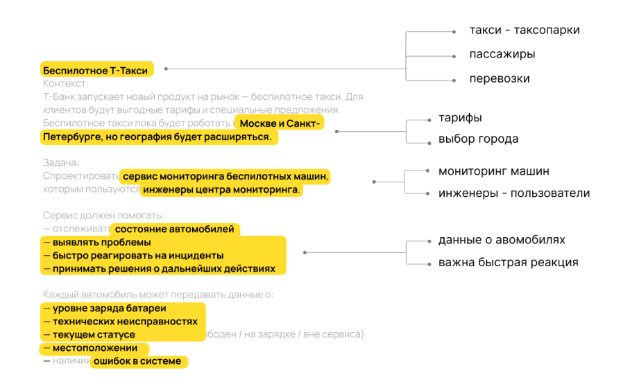
Пользователь системы 👨🏻🦱👩🏼
Беспилотное такси занимается перевозкой пассажиров.
По данным исследований, уровень доверия беспилотным автомобилям в странах, где уже применяется эта технология составляет около 50%.
В России беспилотное такси только планирует запуск, поэтому уровень доверия здесь ниже.
От работы инженеров зависит не только жизнь пассажиров и состояние машин, но и уровень доверия населения новым технологиям.
Неисправность машины = угроза жизни, падение доверия, потеря денег
Контекст: инженер работает в режиме реального времени + высокая ответственность + решение и предотвращение инцидентов
Приоритет пользователя:
• быстрая реакция на инциденты
• выявление проблем
• анализ данных (отслеживание состояния автомобилей, предотвращение инцидентов)
Поиск решения
Какие есть аналоги? 🤔
Для облегчения задачи, решила поискать аналогичные сервисы, существующие на рынке.
Сервис в России, где состояние машин отслеживается без участия водителя, предоставляется обслуживание и контроль – каршеринг
• В открытом доступе есть данные о системах
• Уже является успешным бизнесом
• Имеет аналоговую систему мониторинга
Изучив информацию о мониторинге автомобилей каршеринга, узнаю как работает система отслеживания, какие параметры можно отслеживать и какие могут быть потенциальные неисправности и ошибки в системе
CJM
CJM построена вокруг когнитивной нагрузки и скорости реакции. Основной фокус – переход от обнаружения проблемы к действию без потери контекста
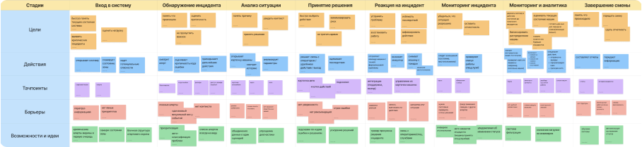
Информационная архитектура
В системе будет много разделов и блоков, верхнеуровневая ИА помогла мне не запутаться и примерно понять, где что будет находиться.
Драфты
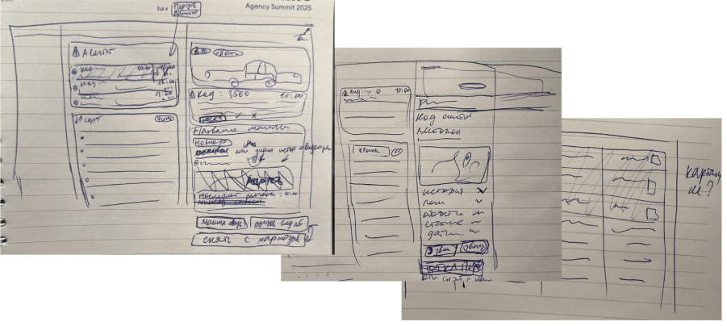
Итоговое решение
Боковое меню
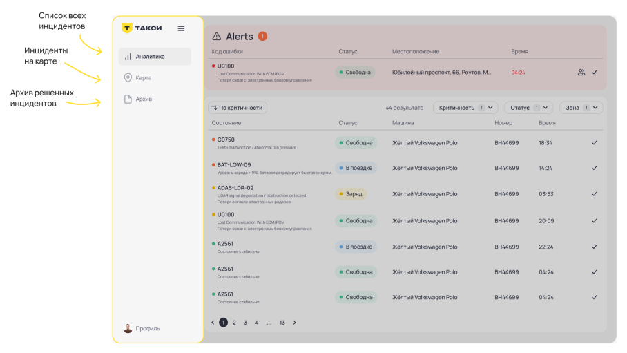
Рабочая поверхность
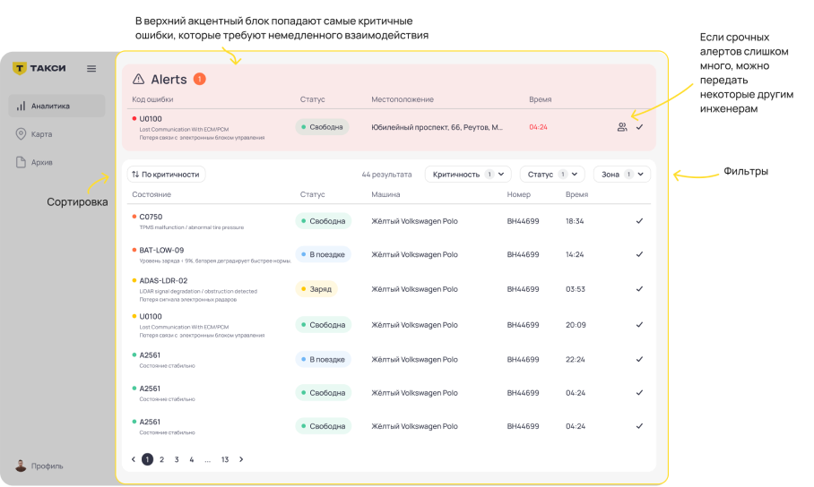
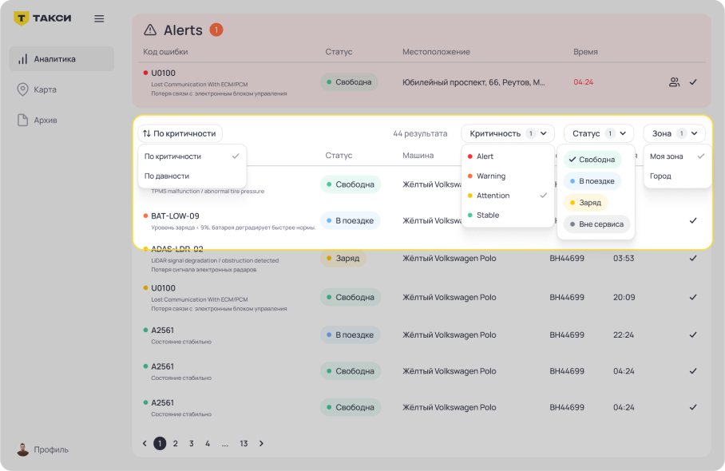
Система сортировки помогает анализировать состояние системы в целом
Карточка инцидента
Вся информация направлена на понимание контекста и текущих характеристик, чтобы принять правильное дальнейшее решение
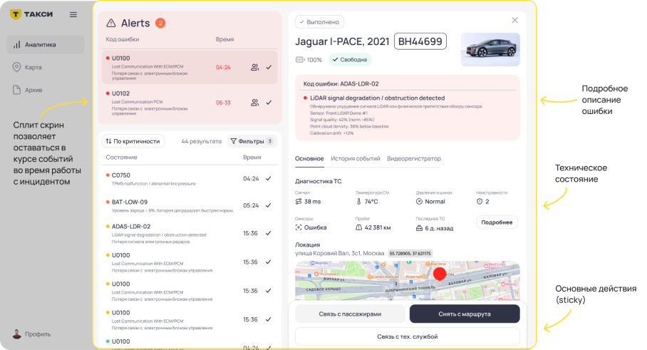
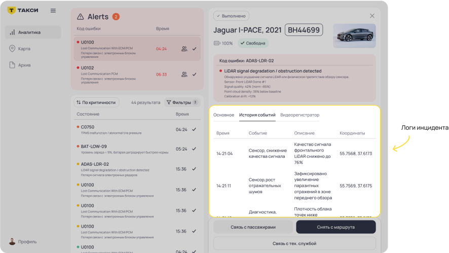
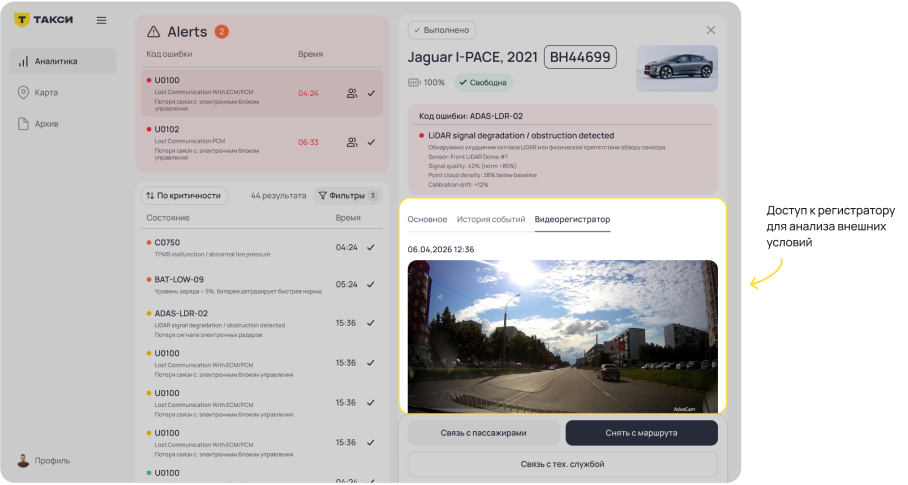
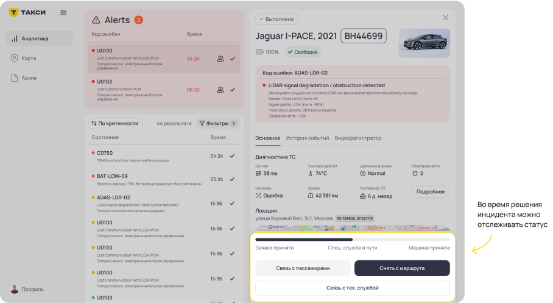
Инциденты на карте для проактивного мониторинга
Можно понять загруженность зоны, увидеть аномалии (напр. много алертов в одной зоне)
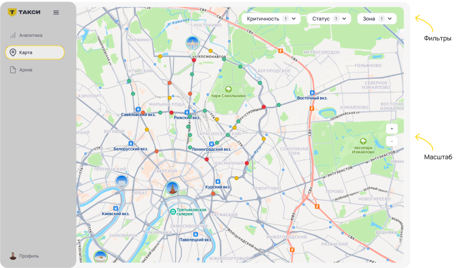
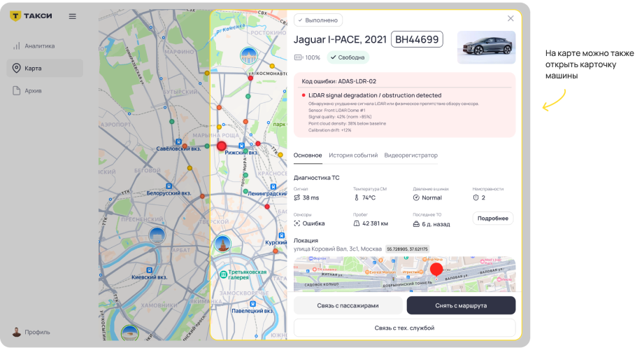
Примечания
В работе пользовался Chat GPT для исследования существующих решений и изучения технических данных о мониторинге автомобилей. Макеты собраны без использования ИИ. Все компоненты взяты из открытой библиотеки Taiga в Figma Community.
Ссылка на макеты